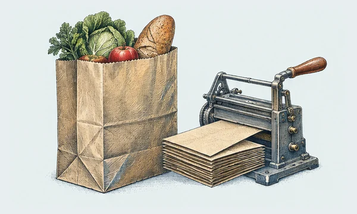
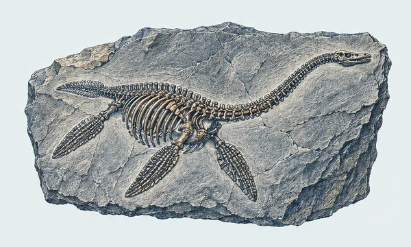
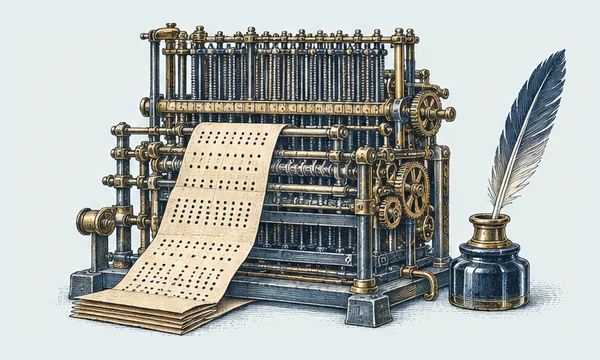
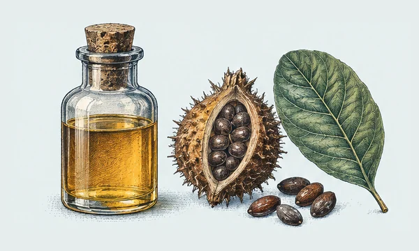
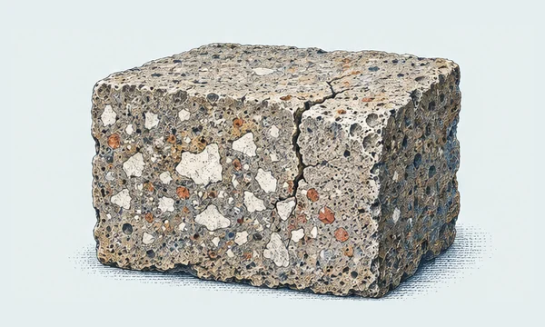
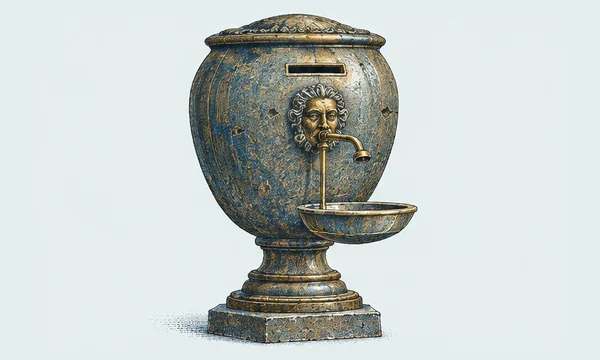
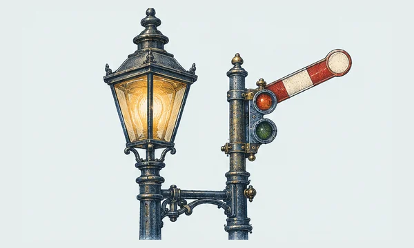
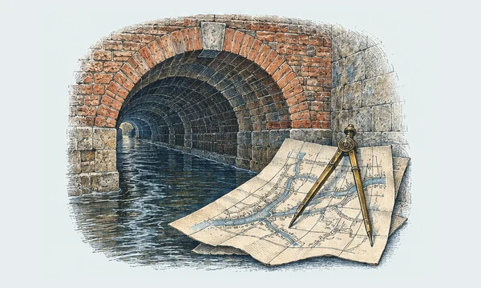
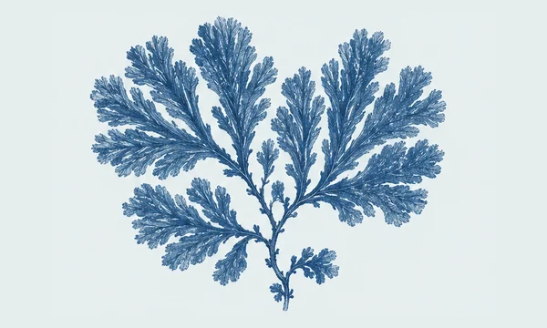

A Little Wonder collection
The Curious Past
Small windows into the extraordinary lives of other times.
10 illustrated discoveries10 discoveries to explore
A Shipwrecked Machine That Mapped the Sky
A corroded lump from an ancient shipwreck turned out to be a pocket-sized model of the heavens.

The Inventor Behind the Flat-Bottomed Paper Bag
The grocery bag's neat, boxy base was once a hard mechanical problem—and a man tried to claim the solution.

The Fossil Hunter Who Changed the Prehistoric World
On England's stormy shore, a teenager uncovered bones that made people reconsider what had once lived on Earth.

Ada Lovelace Saw Beyond the Numbers
A machine that never got built still sparked a vision of what computers might one day do.

Alice Ball's Breakthrough—and the Credit She Nearly Lost
At 23, chemist Alice Ball transformed an old remedy into a treatment patients could receive by injection.

The White Flecks That May Help Roman Concrete Mend
A crumbly white speck inside ancient concrete may be part of why some Roman structures endured for centuries.

An Ancient Temple Had a Coin-Operated Dispenser
Long before snack machines, one ingenious device made a coin release a measured flow of water.

London's First Traffic Light Ran on Gas
Before cars filled city streets, London tried to keep horse-drawn traffic moving with a gas-lit signal.

The Engineer Who Sent London's Sewage Underground
In the summer of 1858, the smell of the Thames helped push London toward a vast underground rebuild.

The Botanist Who Made a Book of Blue Seaweed
A British botanist turned seaweed into delicate white silhouettes on brilliant blue pages—and helped invent a new kind of book.
An unplanned detour
What will you find?
Sometimes the best place to begin is anywhere.